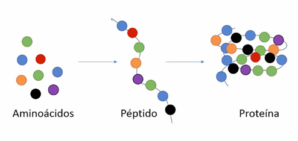

Las proteínas
Las proteínas son macromoléculas fundamentales para la vida. Están formadas por largas cadenas de aminoácidos unidos por enlaces peptídicos, y cada cadena se pliega adoptando una estructura específica que determina su función. Son los componentes más versátiles de la célula, ya que participan en prácticamente todos los procesos biológicos.

Polipéptidos

Cadena de aminoácidos

Proceso de creación
El conjunto total de proteínas expresadas por un organismo, tejido o célula en un momento dado se conoce como proteoma.
Funciones principales
Las proteínas desempeñan una enorme variedad de funciones, siendo responsables de casi todos los procesos celulares:
| Tipo de función | Ejemplo de proteínas | Descripción |
|---|---|---|
| Estructural | Colágeno, queratina | Forman la arquitectura de tejidos, piel, cabello y uñas. |
| Enzimática | Amilasa, ADN polimerasa | Catalizan reacciones bioquímicas, reduciendo la energía de activación. |
| Transporte | Hemoglobina, ferritina | Transportan moléculas como oxígeno, iones o metales. |
| Reguladora | Hormonas peptídicas (insulina), factores de transcripción | Regulan la expresión génica y los procesos metabólicos. |
| Contráctil | Actina, miosina | Permiten el movimiento celular y muscular. |
| Inmunitaria | Anticuerpos (inmunoglobulinas) | Reconocen y neutralizan patógenos. |
| Receptora y señalizadora | GPCRs, receptores de insulina | Transmiten señales químicas entre células. |
Cada proteína puede desempeñar varias funciones según su contexto, modificarse químicamente o asociarse con otras para formar complejos multiproteicos.
Clasificación de las proteínas
Las proteínas pueden clasificarse según diversos criterios:
1. Según su composición
- Simples: formadas solo por aminoácidos (ej. albúmina).
- Conjugadas: poseen un grupo no proteico o cofactor (ej. hemoglobina contiene el grupo hemo).
2. Según su forma
- Fibrosas: alargadas, insolubles y con función estructural (colágeno, queratina).
- Globulares: compactas, solubles y con funciones dinámicas (enzimas, anticuerpos).
3. Según su localización
- Citoplasmáticas, nucleares, de membrana, mitocondriales o secretadas.
4. Según su función molecular (anotación bioinformática)
- Catalíticas, transportadoras, reguladoras, estructurales o de defensa, según la clasificación de la Gene Ontology (GO).
Estructura de las proteínas
La estructura de una proteína es jerárquica y se organiza en cuatro niveles:
- Estructura primaria: la secuencia lineal de aminoácidos.
- Estructura secundaria: patrones locales de plegamiento, como hélices alfa y láminas beta.
- Estructura terciaria: la conformación tridimensional completa de la proteína, determinada por interacciones químicas entre los aminoácidos.
- Estructura cuaternaria: el ensamblaje de varias cadenas polipeptídicas en una proteína funcional.
Estructura de las proteínas
Insulina: un ejemplo de estructura primaria
-
La insulina es una hormona proteica cuya función principal es regular los niveles de glucosa en sangre, facilitando la captación de glucosa por las células.
-
Está formada por dos cadenas polipeptídicas (A y B) unidas por puentes disulfuro:
- La cadena A tiene 21 aminoácidos.
-
La cadena B tiene 30 aminoácidos.
-
Su estructura primaria corresponde a la secuencia lineal de aminoácidos codificada en el gen INS.
Esta secuencia determina su plegamiento posterior y, por tanto, su función biológica. -
Cualquier cambio en la secuencia (mutación puntual o deleción) puede alterar la estructura tridimensional y provocar resistencia o deficiencia funcional de la insulina, como ocurre en algunas formas de diabetes monogénica.
-
La insulina fue la primera proteína cuya secuencia completa se determinó experimentalmente (por Frederick Sanger, 1955), marcando un hito en la biología molecular.
Queratina: un ejemplo de estructura secundaria
-
La queratina es una proteína fibrosa cuya estructura se basa principalmente en hélices alfa (α), un tipo de estructura secundaria estabilizada por puentes de hidrógeno entre los enlaces peptídicos.
-
Existen dos formas principales:
- Alfa-queratina, presente en cabello, uñas y piel, con una estructura helicoidal flexible.
-
Beta-queratina, presente en plumas y escamas, con disposición en láminas beta (β) más rígidas.
-
Varias hélices de queratina se enrollan entre sí formando filamentos resistentes, lo que otorga fuerza y elasticidad a los tejidos.
-
Su organización jerárquica (hélices → fibras → filamentos) ejemplifica cómo las estructuras secundarias pueden ensamblarse para generar propiedades mecánicas específicas.
Mioglobina: un ejemplo de estructura terciaria
-
La mioglobina es una proteína globular compuesta por una única cadena polipeptídica de 153 aminoácidos.
-
Contiene un grupo hemo, igual que la hemoglobina, pero no forma complejos multiméricos: cada molécula de mioglobina actúa por sí sola.
-
Su función principal es almacenar oxígeno en el músculo esquelético, liberándolo cuando el músculo lo necesita durante la contracción.
Hemoglobina: estructura cuaternaria y función
-
La hemoglobina (Hb) está formada por cuatro subunidades proteicas (por eso se considera una proteína con estructura cuaternaria):
-
2 cadenas alfa (α)
-
2 cadenas beta (β)
-
Cada una de esas subunidades contiene un grupo hemo, que tiene en su centro un átomo de hierro (Fe²⁺) capaz de unirse reversiblemente al oxígeno (O₂).
-
En conjunto, la molécula completa de hemoglobina puede transportar cuatro moléculas de oxígeno, una por cada grupo hemo.
Curiosidades y datos interesantes
- Una célula humana contiene más de 10.000 tipos distintos de proteínas, y el proteoma completo puede superar los 100.000 isoformas por modificaciones postraduccionales.
- Las proteínas pueden tener vida media muy variable, desde minutos (ciclina) hasta años (cristalina del ojo).
- La desnaturalización (pérdida de estructura terciaria) puede ser reversible o irreversible y afecta directamente a la función.
- El estudio de las proteínas a gran escala ha permitido descubrir biomarcadores, diseñar fármacos dirigidos y avanzar en terapias personalizadas.
En resumen, las proteínas son los verdaderos "nanorrobots" de la célula: se construyen siguiendo las instrucciones del ADN y realizan las tareas necesarias para mantener la vida.